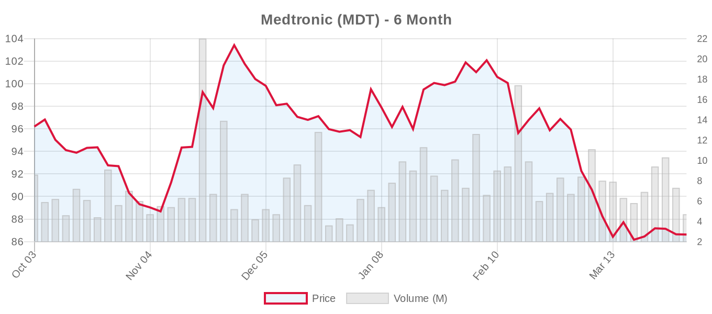
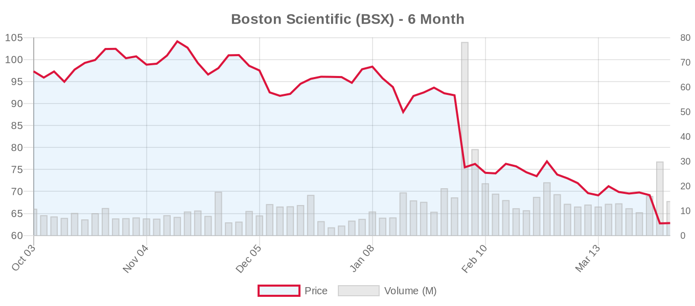

|
||||||||
|
Week of March 29 - April 04, 2026 By E. Nolan Beckett |
||||||||
|
||||||||
Week in ReviewThis week delivered critical insights from ACC Scientific Sessions 2026 that challenge current practice patterns while advancing patient selection precision. The landmark PRO-TAVI trial published in The Lancet demonstrated that deferring coronary intervention before TAVR is safe and reduces bleeding complications, potentially simplifying treatment pathways. Japanese researchers provided compelling evidence that frailty and malnutrition—not age alone—determine long-term TAVR outcomes in nonagenarians, challenging age-based exclusions. Meanwhile, cerebral protection devices for TAVR faced scrutiny with mixed results, and AI-powered echocardiographic assessment achieved substantial agreement with cardiologist interpretations across all three valve positions. Edwards Lifesciences reported sustained 2-year benefits from their EVOQUE tricuspid replacement system, while VDYNE secured FDA approval for their pivotal tricuspid valve trial. Top Stories This WeekPRO-TAVI Challenges Routine Pre-TAVR Coronary Intervention[NOTABLE] The PRO-TAVI trial published in The Lancet represents practice-changing evidence for TAVR management. In 466 patients with coronary artery disease undergoing TAVR, deferring percutaneous coronary intervention was non-inferior to routine pre-procedural PCI for the composite endpoint of death, MI, stroke, and major bleeding at 1 year (24% vs 26%, p=0.0008 for non-inferiority). This investigator-initiated Dutch multicenter study challenges current practice patterns that often mandate coronary revascularization before valve intervention. The findings could streamline TAVR workflows and reduce procedural risks, though individualized decision-making remains essential for complex coronary anatomy. Age vs. Frailty: Rethinking TAVR Candidacy in Nonagenarians[NOTABLE] A multicenter Japanese registry published in JACC Advances of 4,623 TAVR patients, including 700 nonagenarians, demonstrates that chronological age alone should not determine TAVR candidacy. While 5-year mortality was higher in patients ≥90 years (53.2% vs 37.0%), this excess was driven primarily by noncardiovascular deaths, with cardiovascular mortality similar between age groups (20.3% vs 17.0%, P=0.198). Crucially, frailty (Clinical Frailty Scale) and malnutrition (Geriatric Nutritional Risk Index) emerged as the strongest prognostic factors. This evidence supports the 2020 ACC/AHA and 2025 ESC guidelines' emphasis on comprehensive geriatric assessment rather than age cutoffs for TAVR candidacy. Cerebral Protection Devices Show Limited Benefit in Real-World Analysis[NOTABLE] Two comprehensive analyses this week questioned the routine use of cerebral embolic protection devices during TAVR. A multicenter Chinese study of 118 patients found the TriGUARD 3 device provided no significant reduction in total brain lesion volume on diffusion-weighted MRI overall, though bicuspid aortic valve patients showed meaningful benefit. Additionally, a systematic review and Bayesian meta-analysis of cerebral embolic protection devices found no significant reduction in stroke (RR 0.92) or mortality across 11,632 patients from eight randomized trials, with only a 35.6% probability that these devices reduce stroke by more than 10%. These findings challenge current practice patterns and raise cost-effectiveness concerns about routine cerebral protection. AI Achieves Substantial Agreement in Valve Disease Assessment[NOTABLE] The DELINEATE-regurgitation study represents a milestone in automated valve disease evaluation. An AI system using multiview echocardiographic approaches achieved substantial agreement with cardiologist interpretation for classifying AR, MR, and TR severity (weighted kappa 0.81, 0.76, and 0.73 respectively). Remarkably, a separate AI model successfully predicted MR progression risk beyond currently known clinical factors with hazard ratio 4.1, potentially identifying patients who would benefit from earlier intervention. This technology could standardize assessment and improve screening efficiency, particularly valuable given the growing volume of valve disease patients requiring evaluation. VDYNE Advances Tricuspid Replacement Competition[NOTABLE] VDYNE received FDA approval to initiate the TRIVITA1 IDE pivotal trial for its transcatheter tricuspid valve replacement system. This milestone intensifies competition in the tricuspid replacement space, joining Edwards' EVOQUE system (TRISCEND II trial) and other emerging platforms. The approval comes as Edwards reported sustained 2-year clinical benefits from EVOQUE, demonstrating continued durability of transcatheter tricuspid interventions. This expansion of tricuspid treatment options addresses significant unmet need in severe tricuspid regurgitation patients deemed too high-risk for surgery, though long-term durability data remains critical for this emerging therapy category. Aortic Valve (TAVR/TAVI)The PRO-TAVI trial findings published in The Lancet represent level-1 evidence challenging routine coronary revascularization before TAVR. This investigator-initiated Dutch study randomized 466 TAVR candidates with coronary artery disease to either defer PCI or undergo routine pre-procedural intervention. The primary composite endpoint occurred in 24% of the deferral group versus 26% of the routine PCI group, meeting non-inferiority criteria with significant clinical and workflow implications. Cerebral protection during TAVR faced scrutiny from multiple angles this week. The largest Chinese study to date of the TriGUARD 3 device found no overall benefit in reducing brain lesion volume, though bicuspid valve patients showed meaningful protection. A comprehensive meta-analysis examining cerebral embolic protection devices across 11,632 patients from eight RCTs found no significant stroke reduction, challenging the routine use of these costly devices. Patient selection refinement continued with a national analysis of young adults with chronic kidney disease showing comparable in-hospital mortality between TAVR and SAVR in patients under 65, with TAVR demonstrating advantages in length of stay and specific complications including acute kidney injury. However, durability concerns remain paramount in younger patients where long-term valve performance is crucial. Technical innovations included a two-staged balloon inflation technique for SAPIEN 3 deployment in heavily calcified sinotubular junctions, potentially improving safety in anatomically challenging cases. Additionally, Italian researchers reported improving outcomes in pure aortic regurgitation patients with off-label TAVR use, achieving technical success in 95% with only 1.5% moderate paravalvular leak at follow-up. JenaValve Technology announced the U.S. commercial launch of its Trilogy TAVR system, entering the competitive American market. The company also initiated the ALIGN-AR LVAD Registry to evaluate the system in patients with left ventricular assist devices. Mitral Valve (Repair & Replacement)Procedural efficiency improvements dominated mitral repair research this week. A retrospective analysis of 192 consecutive MitraClip procedures demonstrated that the VersaCross Large Access transseptal system reduced total procedure time by 42 minutes compared to traditional mechanical needles (96 vs 138 minutes, all p<0.001). This represents meaningful laboratory efficiency gains that could improve throughput and potentially reduce complications. Technical innovation continued with case reports describing novel approaches to challenging anatomy. An "inverse leaflet grasping" technique using the PASCAL Ace device enabled successful repair in severe prolapse where conventional approaches failed. Additionally, a compelling case report demonstrated successful MitraClip deployment in a 77-year-old with a giant left atrium (113 × 129 × 133 mm), challenging conventional anatomical contraindications through tailored transseptal puncture technique. A comprehensive review examining evolving clinical indications for mitral TEER highlighted the therapy's expansion beyond traditional boundaries to include acute MR after myocardial infarction, hypertrophic obstructive cardiomyopathy, and combined procedures with tricuspid repair or TAVR. This reflects growing recognition of M-TEER's versatility in high-risk patients unsuitable for surgery. Long-term durability insights emerged from a retrospective study of 147 patients with mitral annular calcification undergoing aortic valve replacement, finding no significant progression of mitral stenosis or regurgitation over 6 years, supporting conservative approaches to concomitant mitral disease in selected populations. Tricuspid Valve (Repair & Replacement)[NOTABLE] VDYNE secured FDA approval to initiate the TRIVITA1 IDE pivotal trial for its transcatheter tricuspid valve replacement system, intensifying competition in the rapidly expanding tricuspid intervention space. This milestone adds to the growing arsenal following successful trials with TriClip (TRILUMINATE) and Edwards' EVOQUE system (TRISCEND II). Edwards Lifesciences reported sustained 2-year follow-up data from their EVOQUE transcatheter tricuspid valve replacement system, demonstrating sustained clinical benefits including improved functional capacity and quality of life measures. These durability signals support the platform's continued development, though longer-term follow-up remains essential. Abbott's TriClip demonstrated heart failure hospitalization reduction in new study results, building on evidence from the TRILUMINATE Pivotal trial. International expansion continued with the first TriClip procedure successfully performed in Africa at CHU d'Oran, Algeria, marking geographic growth for transcatheter tricuspid therapies. A case series highlighted innovative salvage approaches, with off-label use of septal occluder devices to treat recurrent severe tricuspid regurgitation following failed TEER. While creative, such interventions underscore ongoing challenges with tricuspid TEER durability and the need for optimal patient selection. Clinical Trials UpdateAortic Valve Trials
Mitral Repair Trials
Mitral Replacement Trials
Tricuspid Repair Trials
Tricuspid Replacement Trials
Surgical vs. Transcatheter ComparisonsThe young CKD population analysis provided rare comparative data in patients typically excluded from randomized trials. While TAVR showed procedural advantages including reduced acute kidney injury and shorter length of stay, the fundamental durability question looms large for patients under 65 who may outlive their transcatheter valves. This tension between short-term safety and long-term durability continues to define the SAVR vs. TAVR debate in younger populations. A systematic review in Cureus examined long-term outcomes comparing TAVR versus SAVR in low-risk patients, finding that randomized data showed similar long-term survival and stroke rates, while observational studies suggested worse late outcomes following TAVR. The authors appropriately concluded that treatment decisions should be individualized, balancing patient comorbidities with long-term procedural outcomes—reflecting ongoing uncertainty about durability in younger patients, particularly relevant as the ESC 2025 guidelines have lowered the TAVR preference threshold to age 70. Valve Industry Stocks — Weekly Performance
The structural heart sector faced a challenging week with mixed earnings expectations and competitive pressures weighing on valuations. Despite positive clinical data and regulatory milestones, most major players showed weakness, though analyst sentiment remains constructive on long-term growth prospects. Edwards Lifesciences (EW)
Edwards demonstrated resilience as the only major valve stock with positive 6-month performance despite recent volatility. The EVOQUE tricuspid system's sustained 2-year benefits and TAVR market leadership position support the premium valuation. Recent insider selling by VP Donald Bobo Jr. represents routine executive activity rather than fundamental concerns. The April 22 earnings report will be crucial for maintaining momentum heading into Q2. Medtronic (MDT)
Medtronic's diversified portfolio provides stability amid structural heart competitive pressures, though the Evolut TAVR platform faces headwinds from Edwards' SAPIEN dominance. The attractive 14.29 forward P/E suggests potential value opportunity if the company demonstrates innovation pipeline progress and market share stability. AI-enabled TAVR planning initiatives may provide differentiation. Abbott (ABT)
Abbott's significant decline reflects broader portfolio challenges beyond its MitraClip franchise, trading near 52-week lows. The structural heart division anchored by MitraClip and TriClip remains a bright spot with continued TEER adoption. April 16 earnings will provide crucial insight into execution across diversified healthcare segments. The steep decline may present value opportunity for long-term investors. Boston Scientific (BSX)
Boston Scientific suffered the steepest sector decline, experiencing its worst 6-month performance among major valve players despite maintaining Strong Buy analyst consensus. The massive discount to analyst targets suggests significant upside potential if execution improves. LOTUS Edge TAVR platform struggles against entrenched competition, though diversified interventional cardiology portfolio provides some insulation. Anteris Technologies (AVR.AX)
Anteris remains a speculative play on anti-calcification valve technology with its DurAVR platform. The single analyst target of $13.00 represents 72% upside potential, though regulatory approval and commercial execution risks remain high. The company's focus on addressing bioprosthetic valve durability could prove valuable as TAVR expands to younger patients requiring longer valve lifespan. The structural heart sector reflects broader medtech pressures from competitive dynamics, regulatory scrutiny, and reimbursement concerns. Edwards' resilience demonstrates the value of innovation leadership and diversified valve portfolio, while steep declines in other major players may create opportunities for investors with long-term conviction in transcatheter growth trends. Regulatory & PolicyThe Centers for Medicare & Medicaid Services issued an updated TAVR coverage tracking sheet (CAG-00430R2), signaling ongoing refinements to national coverage determination criteria. This administrative update may reflect evolving evidence on patient selection and outcomes monitoring requirements, though specific policy changes require detailed analysis. VDYNE's FDA approval to initiate the TRIVITA1 IDE pivotal trial represents a significant regulatory milestone, expanding the competitive landscape in transcatheter tricuspid valve replacement. This approval follows successful preclinical testing and early feasibility studies, positioning the company to compete with Edwards' EVOQUE system and other emerging tricuspid technologies. Weekend NewsSoloPace announced FDA 510(k) clearance and U.S. commercial release of the SOLO PACE FUSION Temporary Pacing System, expanding options for temporary cardiac pacing during structural heart procedures. The system provides an additional tool for managing conduction disturbances during TAVR, particularly valuable for patients at risk of complete heart block. A Cureus publication examined percutaneous iatrogenic atrial septal defect closure post transcatheter mitral valve repair, revisiting MITHRAS trial findings in a larger cohort. This research addresses an important procedural consideration as mitral TEER procedures increase in volume. Cardiovascular Business highlighted innovations at ACC 2026, including lower drug costs increasing medication compliance and additional FDA clearances for TAVR temporary pacing devices. The coverage emphasizes the continued pace of innovation in structural heart interventions. Week AheadSeveral major earnings reports will drive sector sentiment this week. Abbott reports first quarter results on April 16, 2026, with EPS estimates of $1.15 and revenue expectations of $11.00B. Investors will scrutinize MitraClip performance, TriClip launch progress, and broader healthcare device demand trends. Edwards Lifesciences and Boston Scientific both report on April 22, 2026. Edwards (EPS est: $0.73, Rev est: $1.60B) will face questions about TAVR market dynamics, EVOQUE tricuspid system commercialization, and competitive positioning. Boston Scientific (EPS est: $0.79, Rev est: $5.18B) must address the significant stock underperformance and provide clarity on structural heart strategy amid intense competition. Clinical developments to monitor include continued enrollment in the landmark REPAIR-MR and PRIMATY trials, which will define the role of transcatheter mitral repair versus surgical and medical alternatives. Updates from the TRILUMINATE and TRISCEND II studies will provide insights into tricuspid intervention durability. Regulatory watch points include potential updates on the SAPIEN 3 Ultra RESILIA system's long-term evaluation study initiation and progress on various FDA approvals in the tricuspid space. VDYNE's TRIVITA1 trial initiation will be closely monitored as competition intensifies. Conference activity may include additional presentations from ACC Scientific Sessions 2026 data, with particular attention to late-breaking clinical trials and real-world outcome studies that could influence practice patterns and guideline recommendations. All Research & Sources This WeekResearch Articles:
News:
Clinical Trials:
|
||||||||
|
|
||||||||
|
||||||||
|